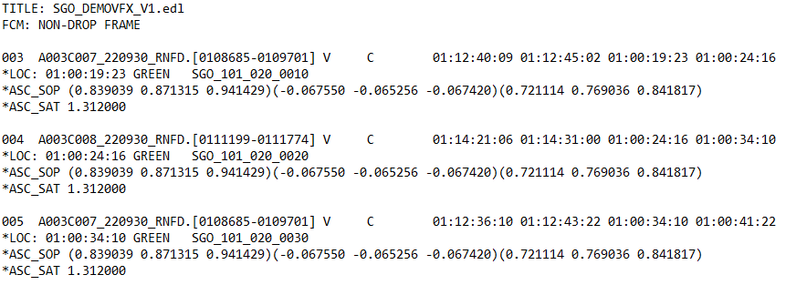
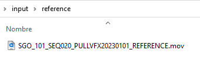
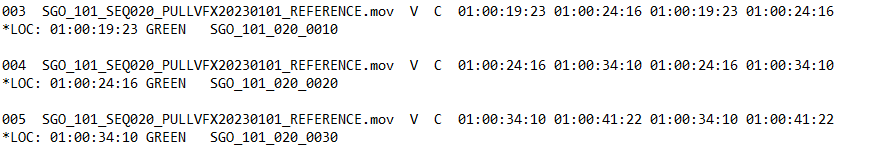
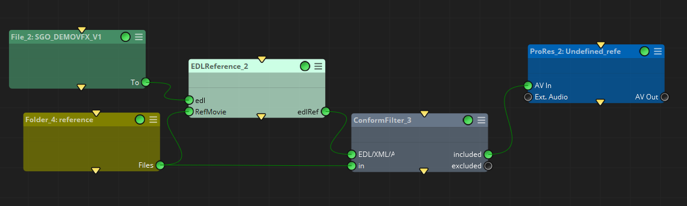
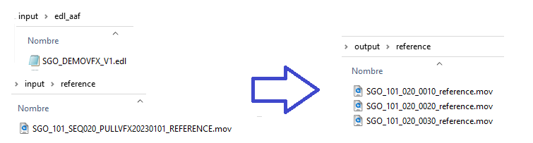

|
<< Click to Display Table of Contents >> EDL Reference |
The main task of this node is to automate the process of providing a reference movie file for each VFX shot given in a VFX pull, where a single reference movie with all VFX and non-VFX shots is usually provided.
This node operates with the following inputs:
•An EDL file, typically derived from the master track used for conforming and exporting the VFX plates. From this edl the node will extract the REC TC information.
•A reference movie, from which the node extracts the filename information.
As output it provides a new EDL file that can be used to conform the reference movie, hence cutting it with the VFX events found in the EDL file used as input. This EDL output file also contains color markers that can be used to track and locate the sequence’s VFX in the timeline.
In the following example, our input consists of an EDL exported from the editorial department. Within this EDL, VFX references are indicated by distinct green markers:

and we have also our reference movie with all the vfx and non-vfx shots:

The EDL Reference node will override each event with the reference movie file name, as well as it will generate a source TC in and out based on the record timecode.
It is important to note that, if the reference movie has an embedded timecode different from the record timecode used in the VFX EDL export, the EDL generated will not work properly.

So if we build a simple workflow that generates this edl, adding afterwards a conform filter and a transcode nodes, we will be able to automatically generate the reference movie for each shot needed by a vfx artist to start working with the corresponding shot:


edl: EDL file containing the cut information of the VFX shots.
RefMovie: reference movie file of the whole sequence to be cut.
edlRef: .edl files for each format selected in the 'edlMarkersFormat' containing markers with the detected VFX edit, in such a way that it will conform to the reference movie.
.
edlRefPath: Folder to store the .edl files created by this node.
edlMarkersFormat: Toggles to select Mistika/Avid or DaVinciResolve format, and the desired color to be used for the markers in each format.
NamingMatchRules
LOC: Locator in the .edl events to extract the VFX name from: It can be a color marker from Avid Media Composer / Mistika / Adobe Premiere (RED, GREEN, BLUE, CYAN, MAGENTA, YELLOW, BLACK, WHITE), or the TapeName or FromClipName statements in the .edl event.
Shot Naming: A regular expression to match and extract the vfx name in the selected LOC
For further information about this node specific properties please refer to the EDL to CC and EDL to Markers nodes documentation.